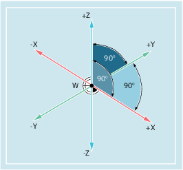

Damit die Maschine bzw. Steuerung mit den im NC-Programm angegebenen Positionen arbeiten kann, müssen sich diese Positionsangaben auf ein Bezugssystem beziehen, das auf die Bewegungsrichtungen der Maschinenachsen übertragen werden kann. Dafür wird ein rechtshändiges kartesisches (rechtwinkliges) Koordinatensystem mit den drei Hauptachsen X, Y und Z verwendet. Die Lage der Achsrichtungen in einem solchen Werkstück-Koordinatensystem ist durch DIN 66217 festgelegt. Der Werkstück-Nullpunkt (W) ist der Ursprung eines Werkstück-Koordinatensystems.
Siehe auch:
Werkstück-Koordinatensystem (WKS)